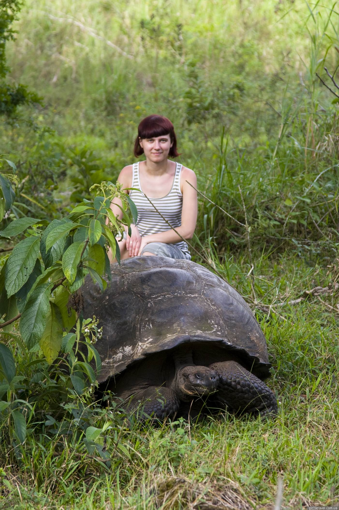
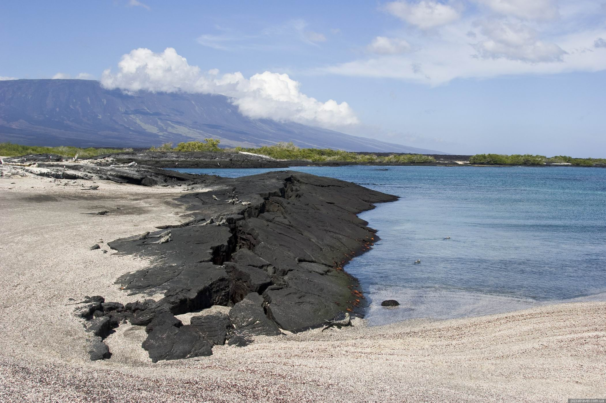

Знаходяться вони приблизно в 1000 кілометрах від Еквадору і складаються з 13 основних островів. Чому ж вони такі унікальні? Причин багато. Острови були народжені вулканами, власне вся поверхня це лава. На тих островах, які утворилися 5-10 мільйонів років тому, це вже не помітно, але є вулкани, які вивергаються і зараз.
Основна причина, чому сюди їдуть туристи, це тварини. За мільйони років тут сформувалася унікальна екосистема, багато тварин не живуть більше ніде, а найголовніше вони не бояться людей. До більшості ми спокійно підходили на 2-3 метра, а до деяких і на метр.

Фернандіна - наймолодший серед Галапагоських островів, він утворився десь 700 тисяч років тому, в той час, як іншим островам більше 4-5 мільйонів років. Вулкан на острові регулярно оживає, останні рази в 2005-му та 2009-му.
Острів досить великий, але точка для висадки є тільки одна - півострів Пунта- Еспіноса (Punta Espinoza). Можливо, це краще місце на Галапагосах.Туристи приїжджають сюди подивитися місто морських ігуан. Їх тут дуже багато, періодично вони йдуть плавати у воду, але більшу частину часу гріються на сонці. Поруч є великі обгороджені піщані поля, де ігуани відкладають яйця.
